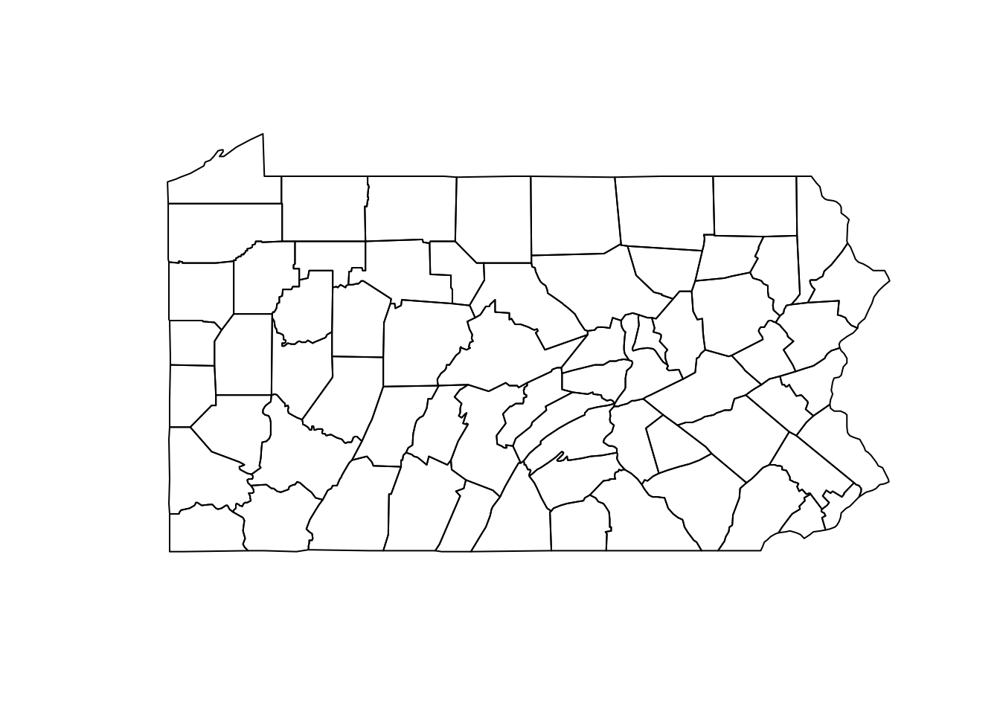

1 Standardized Incidence Ratios
This material is taken from Chapter 5 of Moraga (2020).
A simple measure of disease risk in areas is the standardized incidence ratio (SIR) which is defined as the ratio of the observed to the expected counts. However, in many situations small areas may present extreme SIRs due to low population sizes or small samples. In these situations, SIRs may be misleading and insufficiently reliable for reporting. In these cases it is better to estimate disease risk using a spatial statistical model. Models can incorporate information from neighboring areas and covariate information resulting in smoothing (shrinking) of extreme values.
A popular spatial statistical model is the Besag-York-Mollié (BYM) model (Besag, York, and Mollie 1991) which takes into account that data may be spatially correlated and observations in neighboring areas may be more similar than observations in areas that are farther away. This model includes a spatial random effect that smooths the data according to a neighborhood structure, and an unstructured exchangeable component that models uncorrelated noise. In spatio-temporal settings where disease counts are observed over time, spatio-temporal models that account for spatial structure and temporal correlations and their interactions are used.
The example here is based on data of lung cancer in Pennsylvania counties, US, obtained from the {SpatialEpi} package (Kim and Wakefield 2018), and show results with maps created with the {ggplot2} package (Wickham 2016).
The county bounderies for the state are in the list object pennLC with element name spatial.polygon. We change the spatial polygons S4 object to an S3 simple feature data frame and make a map using the st_as_sf() function from the {sf} package (Pebesma 2018)
## Loading required package: sp## Linking to GEOS 3.7.2, GDAL 2.4.2, PROJ 5.2.0
We can obtain the neighbors of each county using the poly2nb() function from the {spdep} package (Bivand, Pebesma, and Gomez-Rubio 2008). This function returns a neighbors list nb based on counties with contiguous boundaries. Each element of the list nb represents one county and contains the indices of its neighbors. For example, nb[[2]] contains the neighbors of county 2.
## Loading required package: spData## [[1]]
## [1] 21 28 67
##
## [[2]]
## [1] 3 4 10 63 65
##
## [[3]]
## [1] 2 10 16 32 33 65
##
## [[4]]
## [1] 2 10 37 63
##
## [[5]]
## [1] 7 11 29 31 56
##
## [[6]]
## [1] 15 36 38 39 46 54We show the neighbors of each county on a map. For example, we can show the neighbors of counties 2, 44 and 58. First, we create a SpatialPolygonsDataFrame object with the map of Pennsylvania, and data that contains a variable called county with the county names, and a dummy variable called neigh that indicates the neighbors of counties 2, 44 and 58. neigh is equal to 1 for counties that are neighbors of counties 2, 44 and 58, and 0 otherwise.
df <- data.frame(county = names(spdf),
neigh = rep(0, length(spdf)))
rownames(df) <- names(spdf)
spdf <- SpatialPolygonsDataFrame(spdf, df, match.ID = TRUE)
spdf$neigh[nb[[2]]] <- 1
spdf$neigh[nb[[44]]] <- 1
spdf$neigh[nb[[58]]] <- 1Then, we add variables called long and lat with the centroid coordinates for each county, and a variable ID identifying each county.
## Warning in st_centroid.sfc(st_geometry(x), of_largest_polygon =
## of_largest_polygon): st_centroid does not give correct centroids for longitude/
## latitude dataWe create the map with the ggplot() function from {ggplot2}.
library(ggplot2)
ggplot(sfdf) +
geom_sf(aes(fill = as.factor(neigh))) +
geom_text(aes(long, lat, label = ID), color = "white") +
theme_minimal() +
guides(fill = FALSE)
Besag, J., J. York, and A. Mollie. 1991. “Bayesian image restoration, with two applications in spatial statistics.” Annals of the Institute of Statistical Mathematics 43: 1–59.
Bivand, R., E. Pebesma, and V. Gomez-Rubio. 2008. Applied Spatial Data Analysis with R. New York: Springer.
Kim, Albert Y., and Jon Wakefield. 2018. SpatialEpi: Methods and Data for Spatial Epidemiology. https://CRAN.R-project.org/package=SpatialEpi.
Moraga, Paula. 2020. Geospatial Health Data: Modeling and Visualization with R-Inla and Shiny. Boca Raton: CRC Press.
Pebesma, Edzer. 2018. “Simple Features for R: Standardized Support for Spatial Vector Data.” The R Journal 10 (1): 439–46. https://doi.org/10.32614/RJ-2018-009.
Wickham, Hadley. 2016. Ggplot2: Elegant Graphics for Data Analysis. Springer-Verlag New York. https://ggplot2.tidyverse.org.
References
Besag, J., J. York, and A. Mollie. 1991. “Bayesian image restoration, with two applications in spatial statistics.” Annals of the Institute of Statistical Mathematics 43: 1–59.
Bivand, R., E. Pebesma, and V. Gomez-Rubio. 2008. Applied Spatial Data Analysis with R. New York: Springer.
Kim, Albert Y., and Jon Wakefield. 2018. SpatialEpi: Methods and Data for Spatial Epidemiology. https://CRAN.R-project.org/package=SpatialEpi.
Moraga, Paula. 2020. Geospatial Health Data: Modeling and Visualization with R-Inla and Shiny. Boca Raton: CRC Press.
Pebesma, Edzer. 2018. “Simple Features for R: Standardized Support for Spatial Vector Data.” The R Journal 10 (1): 439–46. https://doi.org/10.32614/RJ-2018-009.
Wickham, Hadley. 2016. Ggplot2: Elegant Graphics for Data Analysis. Springer-Verlag New York. https://ggplot2.tidyverse.org.